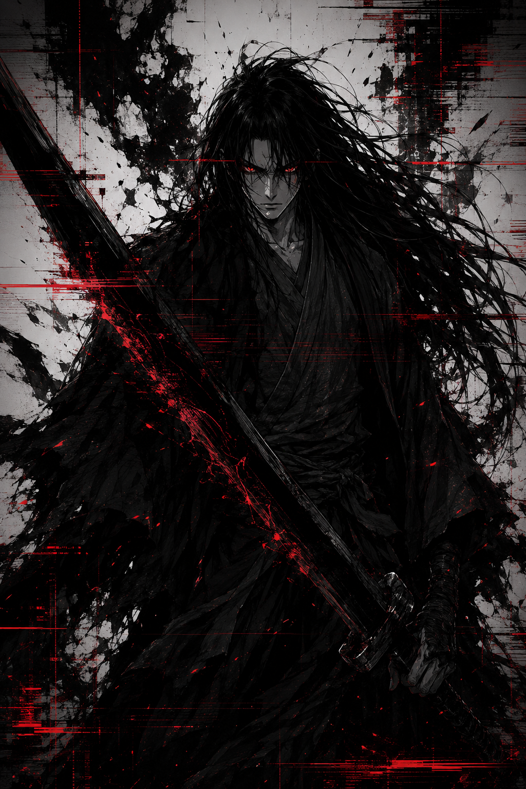

“Homens quebram. Sombras sobrevivem.”
Capitão do Clã Hayashi • O Homem que Caminha Entre Sombras
O Homem que Caminha Entre Sombras e Demônios.
Katsuro nasceu entre silêncio, ausência e segredos. Antes mesmo de abrir os olhos para o mundo, sua vida já havia sido marcada pela fuga.
Sua mãe, uma mulher oriunda das terras amaldiçoadas dos Kurotsuki, atravessou fronteiras grávida e sozinha, carregando consigo não apenas uma criança, mas um medo que nunca ousou explicar completamente.
Ela nunca revelou quem era o verdadeiro pai de Katsuro. Tudo o que dizia era que ele foi embora para trabalhar e jamais retornou.
Mas o silêncio em seus olhos toda vez que o nome Kurotsuki era mencionado dizia mais que palavras. Desde cedo, Katsuro entendeu que havia algo enterrado naquele passado.
Apesar disso, sua infância não foi cruel. Um homem simples do Clã Hayashi acolheu sua mãe e criou Katsuro como filho legítimo.
Foi ele quem ensinou ao garoto os valores do clã: disciplina, honra, autocontrole e estratégia. Katsuro cresceu em uma casa humilde, mas firme, aprendendo desde cedo que sobreviver exigia mais do que força física. Exigia inteligência.
Ainda jovem, destacou-se entre os guerreiros Hayashi. Não era o mais barulhento, nem o mais impulsivo. Enquanto outros buscavam glória em combate, Katsuro observava. Aprendia. Lia as intenções escondidas por trás de cada gesto.
Com o tempo, ascendeu à posição de capitão. Frio diante dos inimigos e respeitado pelos seus homens, Katsuro construiu uma reputação perigosa: a de alguém que nunca desperdiçava movimentos. Nem palavras.
Mas por trás da postura impecável existia uma ferida aberta. A verdade sobre os Kurotsuki passou a persegui-lo conforme envelhecia.
Ele passou então a investigar silenciosamente o clã. Descobriu fragmentos de uma antiga lenda: a de Tetsu-zan, o imperador que entrou na Floresta do Inferno para salvar o filho moribundo e retornou carregando algo inumano dentro de si.
Para Katsuro, aquilo deixou de ser mito. Virou obsessão.
Seu desejo não era apenas derrotar os Kurotsuki. Era apagá-los da existência. Destruir a raiz da corrupção que acreditava ter levado seu pai biológico e destruído incontáveis vidas nas sombras da história.
Durante uma missão diplomática nos domínios de Daikan Onizuka, Katsuro testemunhou algo que alteraria seu caminho: a humilhação pública de Rin Kurosawa.
Ela implorava pela vida do irmão Takeshi enquanto Daikan e Goratsu transformavam justiça em espetáculo de crueldade. Katsuro viu naquela cena mais do que abuso de poder.
Mais tarde, ao encontrar Rin sozinha numa cabana isolada, nasceu entre os dois uma aliança construída não por confiança, mas por feridas semelhantes.
Ela ofereceu informações. Ele ofereceu guerra.
A relação entre ambos cresceu lentamente entre tensão, silêncio e identificação dolorosa. Katsuro nunca foi um homem movido por compaixão fácil. Ainda assim, diante de Rin, sua máscara começava a falhar.
Mesmo assim, Katsuro permanece perigoso. Ele sabe manipular alianças. Sabe negociar vidas como peças políticas. Sabe que, para destruir monstros, talvez precise se tornar um.
Hoje, Katsuro lidera os preparativos para uma guerra que pode mergulhar os reinos em sangue e trevas.
Para muitos, ele é apenas um capitão Hayashi.
Mas nas sombras, seu nome já começa a ganhar outro significado: o homem que ousou desafiar os Kurotsuki, o homem que marcha contra demônios, e talvez o homem destinado a descobrir que o verdadeiro monstro pode habitar dentro dele mesmo.
“O norte não cria heróis. Apenas sobreviventes.”